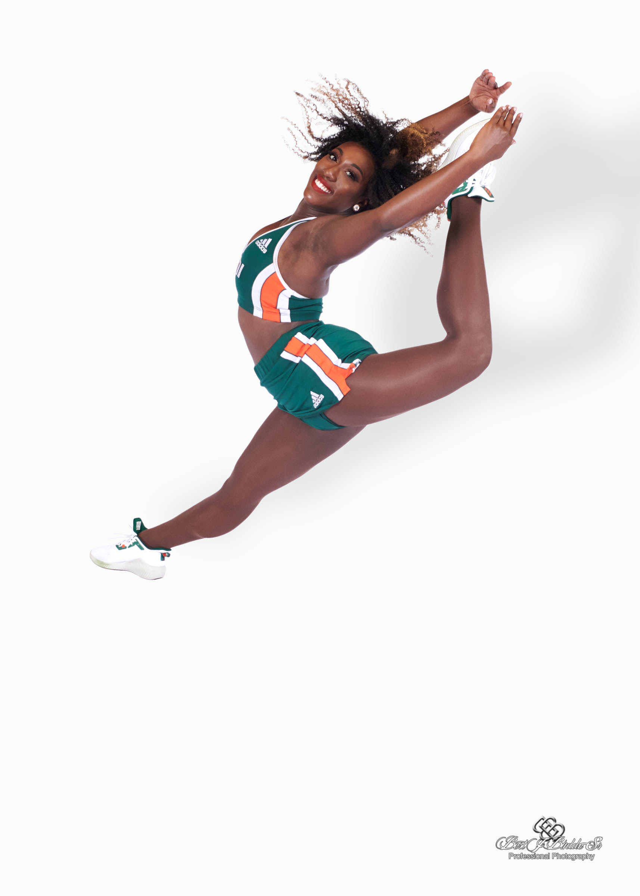
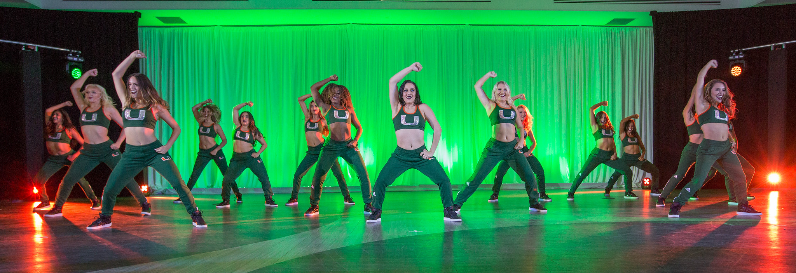
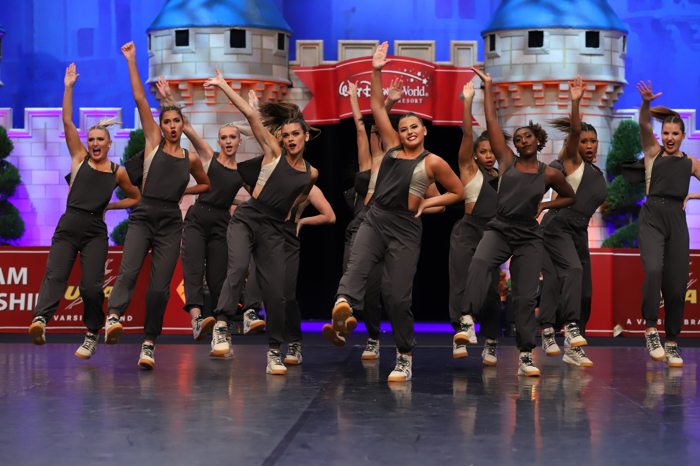
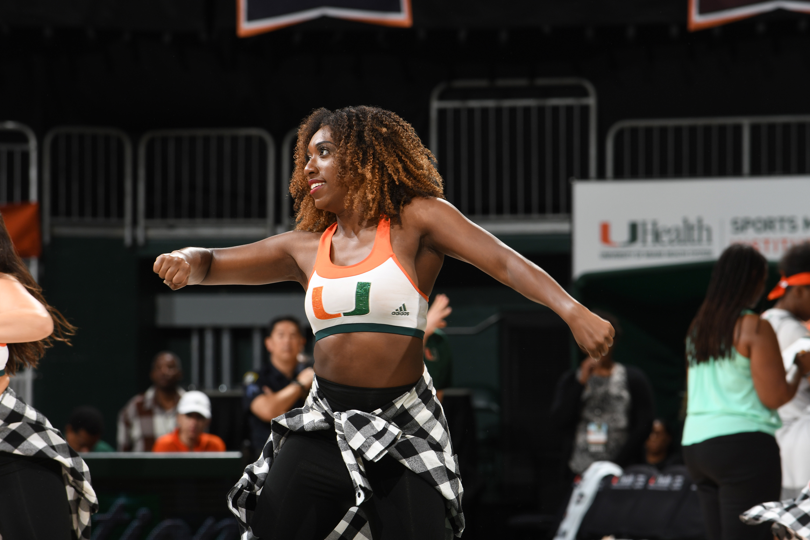
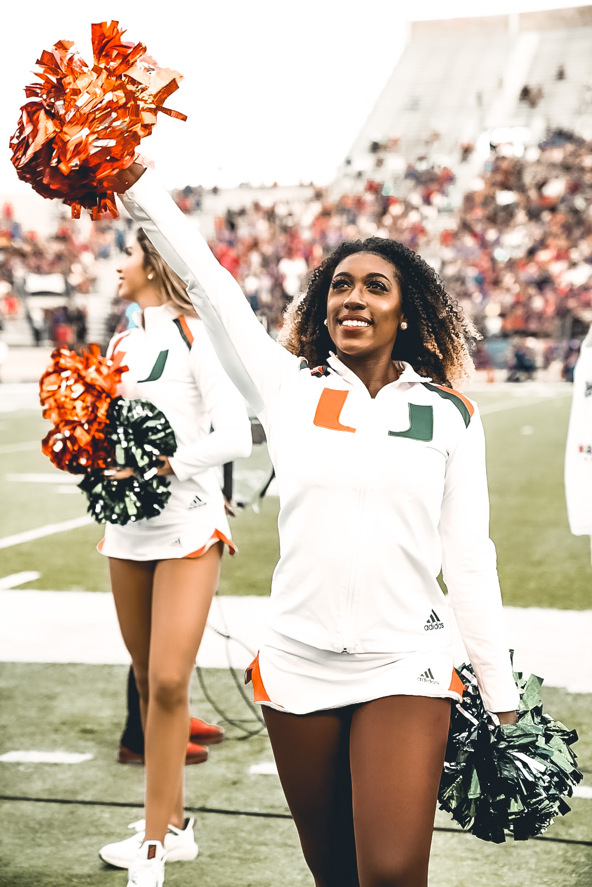
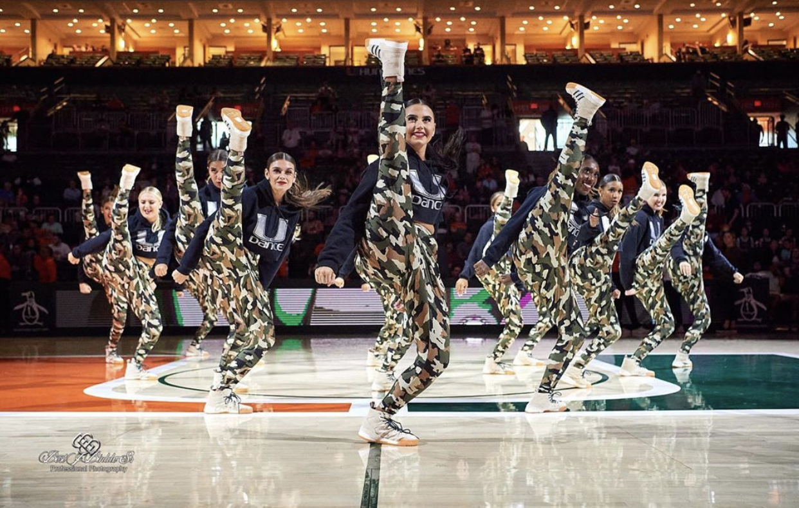

BE PART OF THE SUN SQUAD!

Technique is an important aspect in making the team. We want beautiful lines and feet. It is not about the quantity, but the quality of your work.

This team is bigger than just one person it takes everyone to be selflessly dedicated

The sunsations perform in front of 60,000 people per football game all members must know how to have presence and perform always

Responsible, proactive, and self-motivated team members

The ability to Excite a crowd, high energy, performance quality and facials

High kicks, leg extensions, leaps, & acrobatics
The University of Miami Dance Team, the Sunsations, is the official dance team of the Miami Hurricanes and serve as representatives for the University at various athletic and community events.
The Miami Hurricanes Dance Team consists of 15-18 talented dancers who perform on the sidelines at all home football and basketball games and are featured in timeouts as well as during half-time performances.
The Sunsations will be competing at UDA Nationals in 2020.
How To Audition
Audition application found on Hurricanesports.com
Headshot and fullbody
Acceptance letter
C-Number
Full video